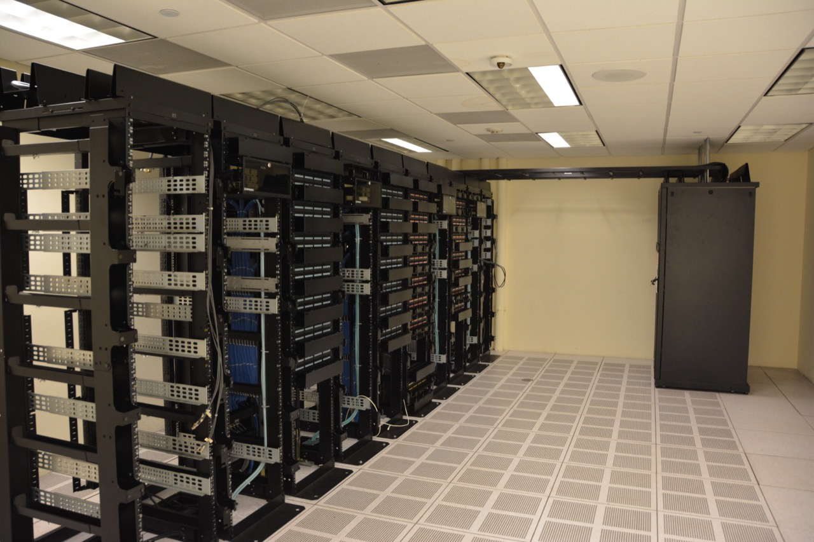

Executive Summary
2026년 7월 제네바에서 첫 유엔 AI 거버넌스 대화가 열리기 직전, 유엔 독립 국제 과학 패널이 예비 보고서에 숫자 하나를 적었다. 세계 상위 AI 슈퍼컴퓨터의 컴퓨팅 파워 가운데 약 90%가 미국과 중국 두 나라에 몰려 있다는 것이다. 이 리포트는 그 총량 뒤에 숨은 진짜 급소를 본다. 문제는 "누가 규칙을 만드는가"가 아니라 "누가 그 규칙을 뒷받침할 검증 능력을 갖는가"다.
프런티어 AI를 독립적으로 감사하고 평가하고 스트레스 테스트하는 일 자체가 대규모 컴퓨팅과 모델 접근권을 요구한다. 값싼 API 질의로 겉을 훑는 검증은 누구나 시작할 수 있지만, 모델이 왜 그렇게 행동하는지 내부를 들여다보는 검증은 컴퓨팅과 가중치를 소유한 나라만 할 수 있다. 그 능력이 지금 사실상 두 나라의 손에 쥐어져 있다는 것이 이 보고서가 겨눈 자리다.
검증할 능력이 없는 나라는 아무리 좋은 규칙에 서명해도 그 규칙을 스스로 집행할 수 없다. 그리고 컴퓨팅이 부족한 대다수 조직과 국가에 남은 현실적 길은 컴퓨팅 군비경쟁이 아니라 데이터 품질을 통한 검증 효율에 있다. 이 글은 그 지형을 데이터저널리즘의 눈으로 해부하고, 검증 주권이라는 개념으로 다시 읽는다.
75 · 15 · 10
상위 AI 슈퍼컴퓨터 컴퓨팅 파워의 미·중·나머지 세계 점유율(%)
유엔 예비 보고서·Epoch AI 계열 지표
59 : 35 : 13
주목할 만한 AI 모델 생산 수 — 미국·중국·나머지 세계 전부
"191개국 0%"보다 단단한 실제 수치
약 240–700배
민간 빅4 2026 AI 인프라 투자 대 유엔 글로벌 기금 목표
$7,250억 vs $10~30억
2.2배
총 개발 컴퓨팅 ÷ 최종 학습 컴퓨팅(중앙값)
검증이 학습만큼 물적 토대를 요구한다는 근거
'90%'라는 숫자를 열어 보면
유엔 보고서가 인용한 "90%"는 강력한 헤드라인이지만, 그 안을 열어 보면 이야기가 더 날카로워진다. 1차 보도가 명시한 세부 분포는 미국 약 75%, 중국 약 15%, 그리고 나머지 전 세계가 약 10%다. 90%라는 총량은 두 나라가 나눠 가진 몫이고, 세계의 나머지 190여 개국이 남은 10% 안에서 서로 자리를 다툰다. 국가당으로 쪼개면 그 비율은 빠르게 0에 수렴한다.
이 분포를 한 장의 막대로 놓으면 격차의 모양이 분명해진다. 아래 도식은 컴퓨팅 파워의 미·중·나머지 세계 점유율을 그대로 옮긴 것이다.
1.1우리가 아는 '슈퍼컴퓨터 순위'가 아니다
여기서 흔한 혼동 하나를 걷어내야 한다. 이 수치는 우리에게 익숙한 Top500 슈퍼컴퓨터 순위와 다른 지표다. 전통적 Top500.org는 LINPACK 벤치마크와 자발적 제출에 기반한 범용 고성능컴퓨팅 순위이고, 중국은 2022년부터 제출을 중단했다. 실제로 2026년 6월 Top500 1위는 중국의 시스템이었지만, 이는 AI를 학습하고 검증하는 데 쓰는 컴퓨팅의 순위가 아니다. 유엔이 인용한 값은 GPU와 AI 가속기를 기준으로 집계한 별도의 인덱스에 가깝고, 그 수치는 민간 연구기관 Epoch AI의 데이터셋과 반올림 오차 수준으로 맞물린다. 실제로 Epoch AI가 집계한 국가별 컴퓨팅 파워 점유율은 미국 74.5%, 중국 14.1%로, 유엔이 반올림해 인용한 75%·15%와 소수점 아래에서만 갈린다.
즉 "세계 최고 슈퍼컴퓨터"와 "AI를 학습·검증할 컴퓨팅"은 같은 말이 아니다. 어느 지표로 세느냐에 따라 1위가 바뀐다는 사실 자체가, 이 논의가 결국 '무엇을 측정하기로 했는가'의 문제임을 보여준다. 아래 표는 두 지표의 차이를 나란히 놓은 것이다.

| 전통 Top500 | AI 슈퍼컴퓨터 지표 | |
|---|---|---|
| 기준 | LINPACK 부동소수점 성능 | GPU/AI 가속기 컴퓨팅 |
| 집계 방식 | 자발적 제출(중국 2022년부터 미제출) | 공개정보 기반 추정(Epoch AI 계열) |
| 2026년 6월 1위 | 중국 시스템 | 미국이 총량의 다수 |
| 답하는 질문 | 누가 가장 빠른 계산기를 가졌나 | 누가 AI를 학습·검증할 컴퓨팅을 가졌나 |
1.2"191개국 0%"라는 문구를 고쳐 읽기
이 보고서를 옮긴 여러 매체가 "나머지 191개국은 사실상 0%"라는 표현을 붙였다. 강렬하지만 원문에 있는 수치는 아니다. 유엔 1차 소스 어디에도 "191"은 등장하지 않는다. 193개 유엔 회원국에서 미국과 중국을 빼면 191이라는 산술을 2차·3차 보도가 덧붙였을 뿐이다. 이 글은 그 숫자를 그대로 쓰지 않는다. 정확히는 "10%를 190여 개국이 나눈다"이며, 나라 단위로 내려놓으면 대다수의 몫은 반올림 오차 안에서 사라진다.
보고서가 실제로 제시한 더 단단한 수치는 따로 있다. 주목할 만한 AI 모델의 생산 국가를 세면 미국 59, 중국 35, 그리고 나머지 세계 전부가 합쳐서 13이다. '컴퓨팅 점유율'이라는 추정값보다, 이 모델 생산 수가 능력의 집중을 더 또렷하게 보여준다. 서로 다른 매체가 붙인 "118개국"(거버넌스 논의 미참여)과 "191개국"(컴퓨팅 미보유)은 각기 다른 질문에 답하는 숫자이므로, 한 문장에 섞어 쓰면 오해를 부른다.
여기서 한 가지를 정직하게 적어 둔다. 국가별 점유율은 모두 공개정보에 기반한 추정치이며, 실제 분포와 5%포인트 이상 차이가 날 수 있다. Epoch AI 자신도 전 세계 AI 컴퓨팅의 10~20%만 포착한다고 고지하고, 중국의 통제 대상 칩은 약 2%만 잡힌다고 밝힌다. 밀수로 유입된 컴퓨팅까지 감안하면 중국의 15%는 상한이 아니라 관측 가능한 하한선에 가깝다. 그럼에도 그림의 골격 — 두 나라의 압도적 집중 — 은 흔들리지 않는다.
규칙보다 먼저 필요한 것은 검증할 손이다
AI 거버넌스 논의는 대개 "누가 규칙을 만드는가"에 집중한다. 그러나 규칙은 그것을 검증할 능력이 있을 때만 작동한다. 자동차 배출가스 기준이 의미를 가지려면 배기를 실제로 측정할 장비와 시험소가 있어야 하듯, 프런티어 AI의 안전 규칙도 그 모델을 뜯어보고 시험할 손이 있어야 집행된다. 그 손이 바로 컴퓨팅과 모델 접근권이다.
검증에는 두 층위가 있다. 값싼 API 질의로 모델의 겉을 시험하는 블랙박스 검증과, 가중치와 활성화와 그래디언트에 접근해 내부를 들여다보는 화이트박스 검증이다. 이 둘은 비용도, 요구 조건도 전혀 다르다. 아래 도식이 그 경계를 보여준다.
숫자만 보면 검증은 학습보다 훨씬 싸다. 프런티어 모델 한 번의 학습은 수억 달러에 이르지만, 레드팀과 평가는 건당 수백에서 수만 달러 수준이다. 자율 레드팀 능력을 측정한 최근 벤치마크에서도 과제당 비용은 수십에서 수만 달러 범위였다. 그래서 "검증은 돈이 없어도 된다"는 결론으로 건너뛰기 쉽다. 하지만 이 저렴함에는 조건이 붙어 있다. 모델에 대한 접근, 즉 API나 가중치가 이미 확보돼 있을 때의 이야기라는 점이다.
진짜 병목은 돈이 아니라 접근권이다. 그리고 접근의 깊이에 따라 검증의 깊이가 갈린다. 블랙박스만으로는 모델이 특정 조건에서 숨긴 행동을 하도록 심어진 백도어를 탐지하는 것이 계산적으로 불가능함이 증명된 범주도 있다. 깊은 안전 검증 — 재현 학습, 해석가능성 분석, 내부 표현 감사 — 은 가중치를 손에 쥐고 학습에 준하는 컴퓨팅을 돌릴 수 있어야 가능하다. 화이트박스가 블랙박스보다 몇 배 비싸다는 식의 단순 비교가 아니라, 화이트박스는 컴퓨팅과 가중치의 소유가 아예 전제조건이라는 뜻이다.
검증에 드는 컴퓨팅의 규모를 가늠하게 하는 수치가 하나 있다. 한 모델을 완성하기까지의 총 개발 컴퓨팅은 최종 학습 한 번의 1.2~4배, 중앙값으로 약 2.2배에 이른다. 실험과 미세조정과 평가가 모두 그 안에 들어간다. 다시 말해, 컴퓨팅이 없는 나라는 학습을 재현할 수 없을 뿐 아니라, 그 배수에 달하는 평가와 해석가능성 컴퓨팅도 갖지 못한다. 검증은 학습만큼, 때로는 그 이상의 물적 토대를 요구한다.
컴퓨트 거버넌스 연구가 말하는 핵심이 여기 있다. 컴퓨팅은 감지·추적·통제가 가능한 물리적 자원이기 때문에 거버넌스의 지렛대가 된다(Sastry 외, 2024). 그런데 같은 이유로, 그 지렛대를 쥔 나라만이 검증도 할 수 있다. 컴퓨팅은 규칙을 강제하는 손이자, 규칙을 검증하는 손이다. 두 손이 같은 자리에 있다는 것이 이 논의의 급소다.
검증 주권의 지리적 독점
앞의 두 장을 겹치면 하나의 개념이 떠오른다. 검증 주권, 즉 자국 안에서 프런티어 AI를 독립적으로 감사하고 시험할 능력이다. 이 능력은 컴퓨팅과 가중치와 인력이라는 물적 토대 위에 서고, 그 토대는 세계에서 극소수 나라에만 있다. 규칙을 만드는 권한은 표결로 나눌 수 있지만, 검증하는 능력은 표결로 나눠지지 않는다.
이 독점은 국제 협력의 지도에도 그대로 찍혀 있다. AI 안전연구소(AISI)의 국제 네트워크는 프런티어 모델을 공동으로 시험하자는 취지로 만들어졌지만, 그 구성원은 영국·미국·일본의 AISI와 EU AI 오피스를 중심으로 한 소수 선진국이다. 미국과 영국의 공동 테스트조차 아직 초기 단계다. 법적 구속력은 없고 자발적 협력에 기댄다. 결과적으로 '컴퓨팅을 가진 나라'와 '검증 네트워크에 낀 나라'가 거의 포개진다.
두 원 바깥의 세계는 어떤 모습인가. 저소득국이 보유한 데이터센터 컴퓨팅은 전 세계의 0.1% 안팎이다. 아프리카는 세계 인구의 약 18%를 차지하지만 데이터센터 용량은 1%에 못 미친다. 이 나라들에게 프런티어 AI 검증은 예산의 문제가 아니라 물리적 부재의 문제다. 시험할 장비 자체가 국경 안에 없기 때문이다.
유엔 사무총장 안토니우 구테흐스는 이 위험을 "디지털 격차가 AI 격차로 굳어질 수 있다"는 말로 요약했다. 인터넷 접근의 불평등이 20년에 걸쳐 남긴 상처 위에, 이번에는 검증 능력의 불평등이 덧씌워질 수 있다는 경고다. 규칙에 서명은 하되 그 규칙을 스스로 확인할 수 없는 나라들이, 세계 대다수라는 것이 지금의 지형이다.
검증 주권은 데이터·컴퓨팅 주권의 다른 이름이다. 한 나라가 자국에 배치될 AI를 독립적으로 감사할 수 없다면, 그 나라의 AI 정책은 결국 남의 검증 결과를 믿을지 말지를 고르는 일로 축소된다. "측정할 수 없는 것은 다스릴 수 없다"는 명제가, 국가 단위에서 가장 냉정하게 성립하는 지점이 바로 여기다.
격차를 메우려는 시도와 그 한계
격차를 좁히려는 공공 투자는 분명히 있다. 미국은 국가 AI 연구 자원(NAIRR)으로 연구자에게 컴퓨팅을 공유하려 하고, 유럽연합은 AI 팩토리와 기가팩토리에 수백억 유로를 배정했다. 인도는 IndiaAI 미션을, 걸프 국가들은 국부펀드를 앞세운 대형 컴퓨팅 투자를 벌인다. 유엔은 컴퓨팅 격차 해소용 글로벌 기금을 제안했다. 문제는 이 모든 공공·국제 자본의 규모가 민간과 자릿수부터 다르다는 데 있다.
숫자를 로그 스케일로 늘어놓으면 그 간극이 눈에 들어온다. 아래 도식에서 각 막대의 한 칸은 10배 차이를 뜻한다.
미국 4대 하이퍼스케일러의 2026년 AI 인프라 투자는 약 7,250억 달러로, 전년 대비 큰 폭으로 늘었다. 반면 유엔이 제안한 글로벌 기금의 초기 목표는 10억에서 30억 달러 수준이다. 둘의 차이는 대략 240배에서 700배에 이른다. 미국의 NAIRR도 권고된 예산의 극히 일부만 실제로 배정됐다. 규모의 자릿수가 이렇게 벌어지면, 공공 투자는 격차를 좁히기보다 격차의 증가 속도를 늦추는 데 그친다.

더 근본적인 흐름은 컴퓨팅의 소유 구조 자체가 민간으로 기울고 있다는 점이다. 공공이 통제하는 AI 컴퓨팅의 비중은 2019년 무렵 40% 수준에서 2025년 20% 미만으로 떨어졌고, 같은 기간 민간의 비중은 80%까지 올랐다. "191개국이 0%에 가깝다"는 상태는 그 나라들의 의지 부족이 아니라, 세계 컴퓨팅이 소수 민간 기업으로 집중되는 구조적 결과다. 이 구조 안에서 검증 격차를 컴퓨팅 확충만으로 메우려는 시도는 밑 빠진 독에 물 붓기가 되기 쉽다.
컴퓨팅 없이 검증하기 — 데이터 중심 대안
그렇다면 컴퓨팅이 부족한 대다수 나라와 조직은 검증을 포기해야 하는가. 그렇지 않다. 화이트박스 검증이 막혀 있다는 사실이, 검증 자체가 불가능하다는 뜻은 아니다. 컴퓨팅 군비경쟁이라는 한 방향 대신, 자원 대비 검증력을 극대화하는 다른 방향이 있다. 그 방향의 축이 데이터다.
데이터 중심 검증은 세 가지 실무로 요약된다. 첫째, 잘 큐레이션된 평가셋이다. 위험 시나리오를 정밀하게 담은 소규모 고품질 평가셋은, 무차별적인 대규모 질의보다 적은 컴퓨팅으로 더 날카로운 신호를 낸다. 둘째, 데이터 계보와 품질 감사다. 모델이 무엇을 학습했는지 그 데이터의 출처와 품질을 추적하면, 내부를 직접 열지 않고도 위험의 상당 부분을 간접 검증할 수 있다. 셋째, 표적화된 벤치마크다. 일반 성능이 아니라 특정 실패 양식을 겨냥한 벤치마크는 제한된 자원을 가장 아픈 곳에 집중시킨다.
| 컴퓨팅 중심 검증 | 데이터 중심 검증 | |
|---|---|---|
| 전제 | 가중치 소유 + 대규모 컴퓨팅 | 고품질 평가 데이터 + 계보 정보 |
| 대상 | 모델 내부(재현 학습·해석가능성) | 모델 행동·학습 데이터 품질 |
| 진입 장벽 | 극소수 국가만 가능 | 대다수 조직·국가가 접근 가능 |
| 강점 | 가장 깊은 안전 보증 | 자원 대비 검증 효율 |
이 접근은 조달의 언어로도 옮길 수 있다. 어떤 조직이 AI를 도입할 때 던져야 할 질문은 "이 모델이 좋은가"만이 아니라 "우리가 이 모델을 독립적으로 검증할 수 있는가"다. 그 답이 '아니오'일 때, 데이터에 기반한 대리 검증 — 잘 설계된 평가셋과 계보 감사 — 이 현실적 차선이 된다. 완벽한 화이트박스 감사가 소수의 특권이라면, 데이터 중심 검증은 나머지 세계가 손에 쥘 수 있는 실질적 지렛대다.
결국 이 리포트가 도달하는 곳은 하나의 원리다. 검증은 컴퓨팅의 함수이자 데이터의 함수다. 컴퓨팅으로는 열 수 없는 문이 많은 세계에서, 잘 다듬어진 데이터는 그 문을 우회하는 가장 넓은 통로다. 컴퓨팅을 더 가지지 못하는 대다수에게, 검증의 미래는 더 많은 GPU가 아니라 더 나은 데이터 쪽에 있다.
EDITOR'S NOTE
페블러스가 오래 말해 온 명제는 "측정 없이 신뢰 없다"이다. 이 리포트의 결론 — 검증할 능력이 없으면 규칙은 집행되지 않는다 — 은 그 명제를 국가·데이터·컴퓨팅 주권의 차원으로 확장한 것이기도 하다. 개별 데이터셋을 밀도·거리·분포라는 계측 가능한 신호로 진단하는 데이터클리닉의 관점을 국가 단위로 넓히면, 컴퓨팅이 부족한 조직이 취할 수 있는 검증 전략은 데이터 품질로 수렴한다. 우리는 이 글을 자사 홍보가 아니라 데이터 중심 검증이라는 일반 원리의 사례로 남긴다. 검증의 병목이 컴퓨팅에서 데이터로 옮겨 갈수록, 잘 큐레이션된 데이터의 가치는 지금 우리가 계산하는 것보다 크다.
참고문헌
1차 출처 (유엔)
- 1.UN Independent International Scientific Panel on AI (2026). Preliminary Report. United Nations.
- 2.UN News (2026-07). UN AI panel report ahead of first global governance dialogue. news.un.org.
- 3.IPS News (2026-07). UN Artificial Intelligence Panel Launches Report Ahead of Global Conference. Inter Press Service.
- 4.Digital Watch Observatory (2025). UN Secretary-General report on voluntary financing options for AI. (Global Fund for AI $1–3B 근거)
학술 논문
- 5.Sastry, G., Heim, L., Belfield, H., et al. (2024). Computing Power and the Governance of AI. arXiv: 2402.08797.
- 6.Cottier, B., & Rahman, R. (2024). The Rising Costs of Training Frontier AI Models. arXiv: 2405.21015. (총 개발 컴퓨팅 ÷ 최종 학습 = 중앙값 2.2배)
- 7.Casper, S., et al. (2024). Black-Box Access is Insufficient for Rigorous AI Audits. FAccT 2024 (Apollo Research).
- 8.AIRTBench (2025). Measuring Autonomous AI Red Teaming Capabilities in Language Models. arXiv: 2506.14682.
- 9.Epoch AI (2025). Trends in AI Supercomputers. arXiv: 2504.16026.
- 10.(2026). Expanding External Access to Frontier AI Models for Dangerous Capability Evaluations. arXiv: 2601.11916.
데이터·정책·기관
- 11.Epoch AI. Data on GPU Clusters · AI supercomputers performance share by country. epoch.ai.
- 12.Stanford HAI (2026). The 2026 AI Index Report.
- 13.TOP500.org (2026). 67th TOP500 List (June 2026).
- 14.NSF (2025). Foundations for Operating the NAIRR (NAIRR-OC), NSF 25-546.
- 15.European Commission. AI Factories / AI Gigafactories (InvestAI); IndiaAI Mission (indiaai.gov.in); 걸프 국부펀드(MGX·HUMAIN·QIA) 공개 발표.
- 16.CSIS / CFG. AI Safety Institute International Network; METR, Protocol FAQs / Frontier Risk Report.
주: Epoch AI 데이터셋은 전 세계 AI 컴퓨팅의 약 10~20%만 커버하며(자체 고지), 중국 통제 대상 칩은 약 2%만 포착한다. 모든 국가별 점유율은 공개정보 기반 추정치로 실제 분포와 5%포인트 이상 차이가 날 수 있다. "191개국"은 원 보고서에 없는 2차 매체의 산술 추정치이므로 본문에서는 "190여 개국이 10%를 나눈다"로 대체했다.